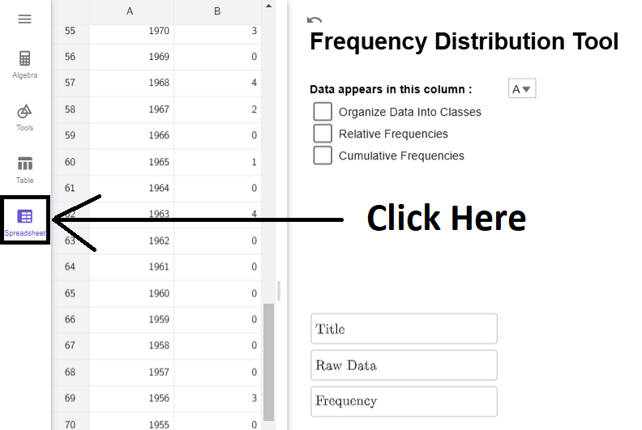
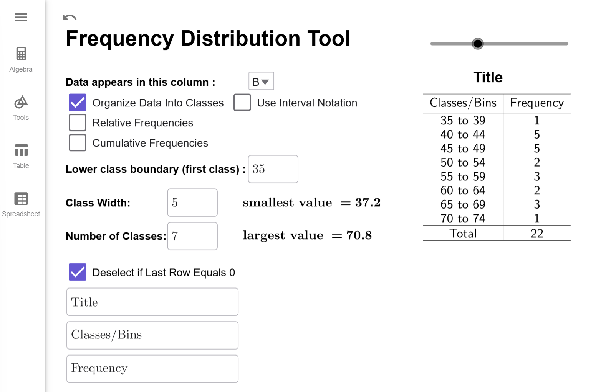
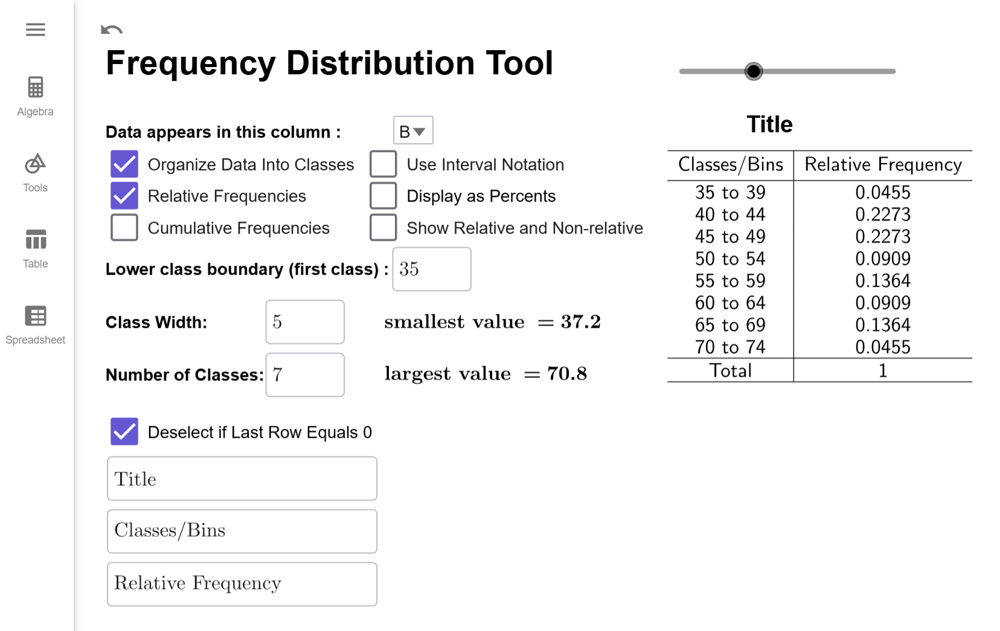
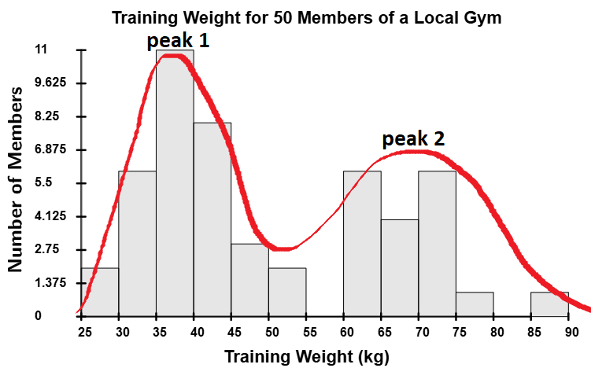

Datasets for Chapter 2
Tools Required
Datasets
Clicking on the button will copy the Dataset to your Clipboard.
How to Create Frequency Distributions
Distributions hold significant theoretical importance in this course. In this section, we will learn about frequency distributions, which is the basis for many of the concepts in this course.
Basics of Frequency Distributions
What is Frequency?
The frequency of a data point is how many times it shows up in the data set.
What is a Frequency Distribution?
A frequency distribution is a table that lists either the raw data or classes (defined below) in the first column and corresponding frequency in the second column.
Before the advent of computers, frequency distributions were created manually. This involved arranging the data in ascending order and marking a tally for each occurrence of a data point. This process was prone to human errors such as miscounting or duplicating data.
With computers, creating frequency distributions is much faster and more accurate than manual methods. Tools like SPSS, MATLAB, and Excel offer advanced statistical capabilities. GeoGebra, however, is particularly useful in educational settings because of its simplicity and visualization tools, making it ideal for students learning this process.
Example
The data on the number of deaths directly caused by tornadoes in Tennessee is given in the table
below. Create a Frequency Distribution for the number of deaths per year.
| Year | Direct Fatalities | Year | Direct Fatalities | Year | Direct Fatalities | Year | Direct Fatalities |
|---|---|---|---|---|---|---|---|
| 2023 | 17 | 2004 | 0 | 1985 | 0 | 1966 | 0 |
| 2022 | 0 | 2003 | 12 | 1984 | 1 | 1965 | 1 |
| 2021 | 4 | 2002 | 17 | 1983 | 0 | 1964 | 0 |
| 2020 | 27 | 2001 | 3 | 1982 | 0 | 1963 | 4 |
| 2019 | 0 | 2000 | 1 | 1981 | 0 | 1962 | 0 |
| 2018 | 1 | 1999 | 12 | 1980 | 0 | 1961 | 0 |
| 2017 | 0 | 1998 | 7 | 1979 | 2 | 1960 | 0 |
| 2016 | 2 | 1997 | 1 | 1978 | 0 | 1959 | 0 |
| 2015 | 2 | 1996 | 0 | 1977 | 0 | 1958 | 0 |
| 2014 | 2 | 1995 | 3 | 1976 | 0 | 1957 | 0 |
| 2013 | 0 | 1994 | 5 | 1975 | 3 | 1956 | 3 |
| 2012 | 3 | 1993 | 1 | 1974 | 47 | 1955 | 0 |
| 2011 | 32 | 1992 | 1 | 1973 | 1 | 1954 | 0 |
| 2010 | 1 | 1991 | 5 | 1972 | 0 | 1953 | 4 |
| 2009 | 2 | 1990 | 0 | 1971 | 3 | 1952 | 75 |
| 2008 | 31 | 1989 | 1 | 1970 | 3 | 1951 | 0 |
| 2007 | 0 | 1988 | 6 | 1969 | 0 | 1950 | 9 |
| 2006 | 34 | 1987 | 0 | 1968 | 4 |
Solution
First, click on the Copy Data to Clipboard button and a popup should appear
that indicates the copy was successful.
Next, open the Frequency Distribution Tool by clicking on this link
or by going to the GeoGebra Tools module and clicking the link provided there. Once
Frequency Distribution Tool is opened, click on the Spreadsheet tab.
Click on the A1 Cell, and right click to open up the
Context Menu.
Select Paste from the Menu, and the data will copy into the
spreadsheet. (This may take a moment to load. Please be patient.)
Notice that the data in which we are interested is in
column B. Remember this! Click on the Spreadsheet tab to hide the data.

Notice that the tool is set by default to column A. If we click on the dropdown box and select column B, we will get the correct frequency distribution.

Interpretation
The numbers in the Data column represents the number of deaths reported. The numbers in the Frequency column represent the number of years from 1950 to 2023 that reported that many deaths. For example, 10 years between 1950 and 2023 reported 1 death caused by Tornadoes in Tennessee.
Note
The Title and Column headers as customizable. Just click on the corresponding TextBox in the lower right corner, delete the existing text, and enter what you want to appear there. There is also a slider above the title so you can adjust the horizontal positioning of the title.
$$\tag*{\(\blacksquare\)}$$
While the above example works well for small data sets, many frequency distributions group data into ranges instead of listing each unique data point individually. For example, we could group the number of years with 0 to 4 deaths, 5 to 9 deaths, 10 to 14 deaths, and so on, creating a row in the table for each of these ranges. These ranges are called classes or bins in statistics.
If we created a new class for every 5 deaths, we would need 16 classes to cover all the data, from the class with 0 to 4 deaths up to the class with 75 to 79 deaths. However, this approach would lead to many classes with a frequency of 0, which makes the table less meaningful. To avoid this, we want the ranges to be large enough to capture meaningful data but not so small that most classes are empty.
So how many classes should we have? As the researcher, you get to decide, but a good rule of thumb is to aim for 5 to 20 classes. Once the number of classes is chosen, the formula below will help determine the range for each class, known as the class width.
How do you calculate class width?
The class width is the size of each class and determines how data is grouped. It is calculated using the formula \[ \text{class width } = \dfrac{\text{largest value } - \text{smallest value }}{\text{number of classes}}.\]
If the result is a decimal, always round up to the next whole number to ensure all data points fit into the intervals. For example, if the calculated width is 9.38, round it up to 10. This ensures every data point fits into one of the classes without gaps.
What does this number mean?
The class width measures the difference between the smallest numbers in successive classes. For example, if our first class is from 0 to 4 deaths and our second class is from 5 to 9 deaths, then the class width is 5 since \(5-0=5\).
Can I choose my own class width?
Yes! This formula isn't perfect, and occasionally excludes the maximal data point. Sometimes, you have a preferred width you would like to use. It is up to you! For academic purposes though, we will always use the formula unless a problem requires otherwise.
Example
Our data from Example 1 range from 0 deaths to 75 deaths. Find the class width that you will need if you want 6 classes.
Solution
Using the formula above, we have that \[\begin{align*}\text{class width }&= \dfrac{\text{largest value } - \text{smallest value }}{\text{number of classes}}\&=\dfrac{75-0}{{6}}\&\approx 12.5\end{align*}\]
Since our output gave use a decimal, we round it up to the next integer. Therefore, we will need 13 classes.
$$\tag*{\(\blacksquare\)}$$
Class widths, along with the minimum value of the data set, define what is known as the boundary points of the classes. Boundary points define where one class ends and another class begins.
How do I compute the Boundary Points?
The minimum value is typically the first boundary point. To find the other boundary points, keep adding the class width until you get a value that is larger than (but not equal to) the maximal value in our data set.
For example, if we wanted a class width of 5 for the classes of tornado deaths, the boundary points are 0, 5, 10, 15, 20, \(\ldots\), 70, 75, 80.
Can I use a number other than the minimum value for the first Boundary Point?
Yes! If you choose your own class size, typically you also choose the first boundary points as well. Just remember to keep adding the class width until you get a number larger than the largest value in the data set.
Example
Our data from Example 1 range from 0 deaths to 75 deaths. Suppose you want your boundary points to start at 7 and have class width 10. Find all the boundary points.
Solution
We just start at 7 and keep adding 10 and until we get a number larger than 75. So, the boundary points starting with 5 are \[7,\qquad 17,\qquad 27,\qquad 37,\qquad 47,\qquad 57,\qquad 67,\qquad 77\]
$$\tag*{\(\blacksquare\)}$$
Calculating boundary points and determining the number of classes is straightforward. However, tallying data points in each class can be tedious and error-prone. Instead, well use our GeoGeobra tool to automate the tallying and format it into a table. The next example demonstrates this process.
Example
Using our data from Example 1, create a frequency distribution with 8 different classes.
Solution
The data from Example 1 should already be loaded into GeoGebra. If it is not, follow the steps at the beginning of Example 1 to load the data in and selected option B from the dropbox. Your tool should like this:
The first thing we are going to do is check the Organize Data into Classes checkbox. Multiple new options appear: Lower Class Boundary, Class Width, Number of Classes. (There are other new options; we can ignore them for now.) Notice that the Lower Class Boundary will automatically become the value of the smallest data point; the class width and number of classes will default to preassigned values.
First, we want to calculate the class width. Since we want 8 classes, we will enter that value info class width. Notice that the number of classes will update to 10 since \[\begin{align*}\text{class width }&= \dfrac{\text{largest value } - \text{smallest value }}{\text{number of classes}}\&=\dfrac{75-0}{{8}}\&\approx 9.375\&=10 (\text{rounding up})\end{align*}\]

Now, if you count up the number of classes in the table, notice there is 11 different classes. Why is there 11 when Number of Classes is set to 10? Sometimes, the largest value of the data set gets counted in the last classes when it should not be. It is a quirk of how GeoGebra defined class frequencies. (And there is nothing wrong with that the method GeoGebra uses; it is just uses a slightly different definition of boundary points than was given above.) To correct for this difference, the Frequency Distribution Tool automatically adds an extra class by default. But, notice that the last class has a frequency of 0. That means the extra class wasn't needed, and we can click on the click on the Deselect if Last Row Equals 0 checkbox to remove it. Therefore, we get the following frequency distribution.

Interpretation
The classes/bins column gives the range of values for each class, always including the first number in the range and excluding the last number in the range. For example, the interval 0 to 9 means the range of values starting at 0 and include all the numbers up to but not including 10. The Frequency, as before, tells us the number of years whose number of deaths fell into that range of values. For example, there were 64 years that had 0 up to 10 deaths.
What is the Use Interval Notation Checkbox?
Some instructors/websites prefer to use interval notation to describe the classes/bins. For example, 0 to 9 would be written as $[0,10)$ since $[0$ indicates to start and include 0 and $10)$ means to include all the number up to but not including 10. When the check box is clicked, the frequency distribution looks like this.

For future examples, we will not use interval notation.
$$\tag*{\(\blacksquare\)}$$
Before we close this section out, we will give a demonstration of creating a frequency distribution that starts at a value other than the minimum value of the data set.
Example
Use our data set from Example 1 to create a frequency distribution that starts at 7 and has a class width of 6.
Solution
The data from Example 1 should already be loaded into GeoGebra. If it is not, follow the steps at the beginning of Example 1 to load the data in and selected option B from the dropbox. Your tool should like this if you've been doing all the examples in order on this page:
All we need to do enter 7 for the Lower Class Boundary and 8 for the Class Width. Notice the Number of Classes will update to 10 since Since we want 8 classes, we will enter that value info class width. Notice that the number of classes will update to 10 since \[\begin{align*}\text{number of classes}&= \dfrac{\text{largest value } - \text{smallest value }}{\text{class width}}\&=\dfrac{75-0}{{6}}\&\approx 12.5\&=13 (\text{rounding up})\end{align*}\]

Warning
Notice there are 13 classes, and each has a class width of 6. But, notice that the last class has a 0 in it. The best Frequency Distributions always have a non-zero frequency for the first and last class. Also, notice we missed all the years that had fewer than 7 deaths. So, while this is a correctly constructed Frequency Distribution, it is also a bit misleading.
That is why it is better to let the Lower Boundary be the minimum value. We get all the data, and our first and last classes will be a non-zero frequency ensuring that our table is just the right size for the number of classes or class width we desire.
How to Create Relative Frequency Distributions
An important concept related to frequency is relative frequency, and it is a foundational concept for several key topics in this course. We will use relative frequencies when discussing cumulative frequencies (discussed below), creating histograms, studying probability and probability distributions, and using statistical inference to discuss population proportions. By connecting data analysis to probability theory and statistical inference, relative frequency serves as a bridge between descriptive and inferential methods in a statistics course.
Relative Frequency Distributions
What is Relative Frequency?
Relative Frequency has two interpretations.
- For raw data, relative frequency is the percentage of times that a particular value appears in a data set.
- For data sorted into classes, relative frequency is the percentage of data that appear in a given class.
In both cases, the formula for relative frequency is identical: \[\text{relative frequency }=\dfrac{\text{{frequency}}}{{n}},\] where \(n\) is the number of data points in the sample.
Notice that this will always give a percentage as a decimal, so we will always write \(0.3947\) instead of \(39.47\)% in this course. Using percentages instead of decimals can cause errors in many of the formulas because most statistical formulas use relative frequencies rather than percentages to ensure accurate calculations.
Warning
Relative frequencies will always yield a number between 0 and 1. If you get a number larger than 1 or a negative number, double check your work because you made a calculation error!
What is a Relative Frequency Distribution?
A relative frequency distribution is a table that lists either the raw data or classes in the first column and the corresponding relative frequencies in the second column.
How Do I Compute a Relative Frequency?
Let's consider our Frequency Distribution from Example 4 in How to Create Frequency Distributions:
To determine the number of data points, we first choose a class, such
as the interval 0 to 9, and note its frequency, which is 64. The relative frequency is found
by dividing the class frequency by the total number of year, 74, as follows:
\[\dfrac{{64}}{{74}}\approx 0.8649.\] Thus, \(0.8649\) is the relative frequency for 0 to
10, meaning \(86.49\%\) of the years from 1950 to 2023 had 0 to 10 deaths (excluding
10). Note we will always round relative frequency to four decimal places, which is a
standard practice in statistics.
While it is essential to know how to compute a relative frequency, performing multiple manual calculations to create a relative frequency distribution increases the risk of calculation errors. In our next example, we will see how to use our Frequency Distribution Tool to create a relative frequency distribution.
Example
According to National Institutes of Health Cancer Statistics, the rate at which men
get Colon-Rectal cancer each year (per 100,000 men, rounded to one decimal place) from 2000 to
2021 is given in the table below. Find the relative frequency distribution for this data
if we use a lower class boundary of 35 and a class width of 5.
| Year | Rate | Year | Rate |
|---|---|---|---|
| 2000 | 70.8 | 2011 | 49.5 |
| 2001 | 69.6 | 2012 | 48.0 |
| 2002 | 68.3 | 2013 | 46.9 |
| 2003 | 66.3 | 2014 | 46.7 |
| 2004 | 64.0 | 2015 | 45.5 |
| 2005 | 61.9 | 2016 | 44.5 |
| 2006 | 59.1 | 2017 | 43.5 |
| 2007 | 58.1 | 2018 | 42.9 |
| 2008 | 56.2 | 2019 | 42.7 |
| 2009 | 53.1 | 2020 | 37.2 |
| 2010 | 51.0 | 2021 | 40.8 |
Solution
Load your data into GeoGeobra (see Example 1 of How to Create Frequency Distributions if you need a refresher). Make sure to select column B since the rates are in that column. Since our data is in decimals, this is a good time to choose our lower boundary manually, which is why I gave it to you in the problem. Enter 35 for the lower class boundary and 5 for the class width. Also, make sure the Deselect if Last Row Equals 0 checkbox is checked since our classes only go from 35 up to 70 and our larges data point is 70.8. If you have everything set correctly, your Frequency Distribution Tool should look like this.

Now that we have this set up correctly, all we have to do is check the Relative Frequencies checkbox to convert all the frequencies to relative frequencies. The Frequency Distribution Tool will automatically update the table.

Interpretation
The class bin 4549 has a relative frequency of 0.2773, meaning 27.73% of the years from 2000 to 2021 had 4549 men per 100,000 diagnosed with Colon-Rectal Cancer.
$$\tag*{\(\blacksquare\)}$$
There are two important options for Relative Frequency Distributions you should be aware of.
Relative Frequency Distribution Options
Convert To Percentage
If you click on the Display as Percentages Checkbox, it will convert the relative frequencies to percentages.

Compare Frequency to Relative Frequency
If you click on the Show Relative and Non-Relative Checkbox, a third column will be added showing the original frequencies so you can have the frequency and relative frequency data side-by-side.

Both Options
You can also select both options at once to compare percentages to frequencies.

Example
Consider the following frequency distribution for average August temperatures in Nashville, TN. (Source: Weather UnderGround) Find the relative frequency for the class 86 to 88.
| Degrees Fahrenheit | Number of Years |
|---|---|
| 80 to 82 | 2 |
| 83 to 85 | 14 |
| 86 to 88 | 33 |
| 89 to 91 | 22 |
| 92 to 94 | 5 |
| 95 to 97 | 1 |
| Total | 77 |
Solution
Since 33 of the 77 years had an average temperature of \(86^\circ\)F to \(88^\circ\)F, the relative frequency is \[\dfrac{{33}}{{77}}\approx 0.4286\]
Interpretation
In Nashville, TN, 42.86% of the years between 1948 and 2024 experienced an average August temperature ranging from \(86^\circ\)F up to but not including \(89^\circ\)F.
$$\tag*{\(\blacksquare\)}$$
How to Compute Cumulative Frequency Distributions
Another important concept related to frequency is cumulative frequency, which keeps a running total of frequencies up to a specific value or class. This provides insight into how data accumulates over a specific range of values, and is fundamental in understanding ideas such as median, quartiles, interquartile ranges, computing area under the uniform, normal, and student T curves. By synthesizing raw data into meaningful patterns, cumulative frequency serves as a stepping stone to deeper statistical concepts, emphasizing the relationship between individual data points and their overall context within a dataset.
Cumulative Frequency
What is Cumulative Frequency?
Cumulative Frequency is the number of data points that are less than or equal to some given number (not necessarily in the data set).
What is a Cumulative Frequency Distribution?
A cumulative frequency distribution is a table that lists either the raw data or classes in the first column and the corresponding cumulative frequencies in the second column.
How do I compute Cumulative Frequency?
Let's turn to our Frequency Distribution about tornado deaths in Tennessee from Example 1 in
How to Create Frequency Distributions:
Suppose we are interested in the number of years with 3 or
fewer deaths. From the frequency distribution, 32 years had 0 deaths, 10 years had 1 death,
6 years had 2 deaths, and 7 years had 3 deaths. Adding up the number of years gives
\[32+10+6+7=55,\] so the cumulative frequency for \(3\) is 55. Therefore, 55 years between
1950 and 2023 had 3 or fewer tornado-related deaths in Tennessee.
While it is good to have an idea of how to compute a cumulative frequency, the multiple manual calculations needed for a cumulative frequency distribution increases the likelihood of a calculation error. In our next example, we will see how to use our GeoGebra tool to create a cumulative frequency distribution.
Example
For the data from Example 1 in How to Create Frequency Distributions, create a
cumulative frequency distribution for the raw data.
Solution
Load your data into GeoGeobra (see Example 1 of How to Create Frequency Distributions if you need a refresher).
While we can create a relative frequency distribution for the classes, as a first example, it is easier to work with and interpret the rate data. So, we are just going to click on the Cumulative Frequency Checkbox to change the second column from frequencies to cumulative frequencies.
Interpretation
The Raw Data column gives all the unique values of the raw data, listed from smallest to largest. The Cumulative Frequency column tells us the number of years where the death total for the year is less than or equal to the value in the Data column. For example, for \(x=17\) deaths, the cumulative frequency of 68 indicates that, between 1950 and 2023, there were 68 years in which the number of deaths caused by tornadoes in Tennessee was 17 or fewer.
$$\tag*{\(\blacksquare\)}$$
Relative Cumulative Frequency
Relative cumulative frequency, which integrates the concepts of relative frequency and cumulative frequency, offers a powerful tool for understanding data distributions in a statistical context. It represents the percentage of data points at or below a specific value. When we study area under the normal curve later in this course, we will use both cumulative frequencies and relative cumulative frequencies.
What is Relative Cumulative Frequency?
Relative Cumulative Frequency is the percentage of data points that are less than or equal to some given number (not necessarily in the data set). As with relative frequency, we will always express the percentage as a decimal, such as \(0.2934\) instead of \(29.34\)%. Using percentages instead of decimals can cause errors in many of the formulas we will use in this course, as they require values to be expressed as decimals for accurate computation. As a formula, we can express this as \[\text{relative cumulative frequency}=\dfrac{\text{cumulative frequency}}{{n}},\] where \(n\) is the number of data points.
What is a Relative Cumulative Frequency Distribution?
A relative cumulative frequency distribution is a table that lists either the raw data or classes in the first column and the corresponding relative cumulative frequencies in the second column.
How do I Compute a Relative Cumulative Frequency?
Let's consider our Cumulative Frequency Distribution from Example 1:
One useful feature of a cumulative frequency distribution
is that the last row provides the total number of data points, which in this case is 74.
Now, lets pick a data point, such as 5. To calculate the relative cumulative frequency,
divide its cumulative frequency by the total number of data points:
\[\dfrac{{61}}{{74}}\approx 0.8243.\] This means that \(82.43\%\) of the years had 5 or
fewer deaths. As with relative frequency, we always round to four decimal places.
While it is good to have an idea of how to compute a relative cumulative frequency, the multiple manual calculations needed for a cumulative frequency distribution increases the likelihood of a calculation error. In our next example, we will see how to use our GeoGebra tool to create a cumulative frequency distribution.
Example
For the data from Example 1, create a cumulative relative frequency distribution for the raw data.
Solution
For the data from Example 1 in How to Create Frequency Distributions,
If you are continuing from Example 1, the Frequency Distribution Tool should like this:
We just need to make sure the Relative Frequencies checkbox is also checked, and it will change the cumulative frequencies column to relative cumulative frequencies. If you have done this correctly, your tool should look like this:
Interpretation
The Raw Data column gives all the unique values of the raw data, listed from smallest to largest. The Relative Cumulative Frequency column tells us the percentage of years where the death total for the year is less than or equal to the value in the Data column. For example, for \(x=17\) deaths, the relative cumulative frequency of \(0.9189\) indicates that \(91.89%\) of the years between 1950 and 2023 had 17 or fewer deaths.
$$\tag*{\(\blacksquare\)}$$
Just like relative frequencies, cumulative relative frequencies can be displayed as percentages or side-by-side with cumulative frequencies.
Relative Frequency Distribution Options
Convert To Percentage
If you click on the Display as Percentages Checkbox, it will convert the relative cumulative frequencies to cumulative percentages.
Compare Frequency to Relative Frequency
If you click on the Show Relative and Non-Relative Checkbox, a third column will be added showing the original cumulative frequencies so you can have the cumulative frequency and relative cumulative frequency data side-by-side.
Both Options
You can also select both options at once to compare cumulative percentages to cumulative frequencies.

Shapes of Frequency Distributions
The shape of a frequency distribution is an important geometric property that we can determine from its histogram. While there is one shape that is the most important, we will discuss other shapes at various points during the course. Before diving into the different shapes, it is helpful to understand some important concepts related to distributions: the peak and tails of a distribution.
The Peak and Tails
What is the peak of a distribution?
The peak of a distribution refers to the tallest part of the histogram, which
represents the class(es) with the most data. Distributions can have one peak
(unimodal),
multiple peaks (multimodal), 
or no distinct peak (uniform).
What are the tails of a distribution?
The tails of a distribution refer to the far ends of the distribution, which represent the extreme values of the dataset. For example, in a histogram, the left tail corresponds to the smallest values, while the right tail corresponds to the largest values. The shape and behavior of the tails can provide insights into the skewness and outliers of the distribution.
Now that we understand the tails and peaks of frequency distributions, lets examine the different shapes these distributions can take.
Shapes of Distributions
What are the different shapes of frequency distributions?
There are three main shapes: unimodal, multimodal, and uniform.
Unimodal Distributions (single-peak)
Unimodal distributions have a single peak in their histogram. These distributions begin with small bars that gradually increase in height from left to right, reach a peak at one class, and then decrease from left to right. There are three subtypes of unimodal distributions: normal, skew-left, and skew-right.
Normal Distributions (aka bell-shaped distribution)
This is the most important distribution in the course. A normal distribution is symmetric, with its peak located at the center. Its tails extend in both directions but gradually get closer and closer to the horizontal axis as they extend outward. The shape of the histogram for a normal distribution resembles a bell, hence the name "bell-shaped distribution."
Skew-Left Distributions
A skew-left distribution (also called negatively skewed) is a distribution where the left tail is longer than the right tail. In these distributions, the majority of the data values are concentrated toward the right side of the histogram, with fewer values on the left. This creates a tail that extends toward smaller values.
Skew-Right Distributions
A skew-right distribution (also called positively skewed) is a distribution where the right tail is longer than the left tail. In these distributions, the majority of the data values are concentrated toward the left side of the histogram, with fewer values on the right. This creates a tail that extends toward larger values.

Multimodal Distributions (multiple peaks)
Multimodal distributions have multiple peaks in their histogram. A bimodal distribution has two peaks, a trimodal distribution has three, and anything with four or more peaks is just called a multimodal distribution. While we wont cover multimodal distributions in this course, you may encounter them in advanced statistics courses.

Uniform Distributions
Uniform distributions have bars that area all approximately the same height (give or take a small margin of error).

Homework Note
Homework problems will ask you to identify the shape of a distribution. The easiest way to determine the shape is by drawing or visualizing a curve through the tops of the bars, as shown in the examples above for unimodal and multimodal distributions. If the distribution is uniform, all the bars should be approximately the same height.
How to Construct Stem-and-Leaf Plots
Stem-and-leaf plots are a simple, effective way to organize and visualize numerical data. They reveal patterns, clusters, and unusually small or large data, making them valuable for understanding distributions. This page covers how to create these plots, handle repeated values, decide on rounding, split stems for clarity, and compare datasets using back-to-back plots. Through examples and explanations, youll learn to master stem-and-leaf plots for various data types.
Stem-and-Leaf Plots
What is a Stem-and-Leaf Plot?
A stem-and-leaf plot is a way to organize rounded numerical data by splitting each value into a stem (the leading digit(s), such as tens) and a leaf (the trailing digit(s), based on the chosen rounding level). For example, if the dataset includes \(32\), \(35\), and \(41\), rounded to the nearest one, the plot would look like: \[ \begin{align*} 3 &\mid 2 \ 5 \\ 4 &\mid 1 \end{align*} \] Here, the stem represents the tens, and the leaf represents the ones. The leaf represents the level of rounding, allowing the plot to effectively display and organize data
What if I have two or more data point with the same value?
If the same value shows up more than once in a dataset, it will get a leaf for each time it appears. If we change our example to \(32\), \(35\), \(35\), \(41\), the plot would look like \[ \begin{align*} 3 &\mid 2 \ 5 \ 5 \\ 4 &\mid 1 \end{align*} \] and the two 5's represent the fact that 35 showed up twice in the data.
Where should I round my data?
There is a bit of an art to deciding how to create a stem-and-leaf plot. The best stems are those that appear frequently in your data and group it meaningfully.
For example, if most of your data falls between 300 and 340, you are likely to have many numbers in the ranges 300309, 310319, 320329, and 330339. In this case, 30, 31, 32, and 33 would be good choices for stems, and the ones digit would make a good leaf.
On the other hand, if most of your data ranges from 500 to 900, you will likely see many numbers in the broader ranges 500599, 600699, 700799, and 800899. In this case, 5, 6, 7, and 8 would be better choices for stems. By rounding to the nearest 10, the tens digit becomes your leaf.
The goal is to create a plot that organizes the data clearly and effectively, without being cluttered or too sparse.
Too Clustered

Good Balance of Leaves

Too Spread Out

Example 1
The following dataset represents the monthly average rainfall (in mm) for a Midwestern town from 2018 to 2022. Construct a stem-and-leaf plot for the data, and describe the shape of the distribution.
| Month (2018) | Rainfall (mm) | Month (2019) | Rainfall (mm) | Month (2020) | Rainfall (mm) | Month (2021) | Rainfall (mm) | Month (2022) | Rainfall (mm) |
|---|---|---|---|---|---|---|---|---|---|
| January | 32 | January | 36 | January | 31 | January | 34 | January | 33 |
| February | 46 | February | 44 | February | 47 | February | 48 | February | 45 |
| March | 53 | March | 50 | March | 54 | March | 52 | March | 51 |
| April | 67 | April | 69 | April | 65 | April | 68 | April | 70 |
| May | 41 | May | 45 | May | 43 | May | 42 | May | 40 |
| June | 78 | June | 80 | June | 74 | June | 79 | June | 77 |
| July | 35 | July | 38 | July | 37 | July | 36 | July | 34 |
| August | 64 | August | 63 | August | 66 | August | 62 | August | 65 |
| September | 52 | September | 55 | September | 50 | September | 53 | September | 54 |
| October | 90 | October | 87 | October | 88 | October | 89 | October | 91 |
| November | 48 | November | 50 | November | 49 | November | 47 | November | 46 |
| December | 73 | December | 76 | December | 72 | December | 75 | December | 74 |
Solution
To keep the Stem-and-Leaf Plot Generator running smoothly, it is important to determine the stems and leaves before starting. Since our data ranges from 31 to 91, the most logical choice is to use the tens digit as the stem and the ones digit as the leaf. Set the tools rounding to 1, 
copy the dataset to your clipboard, and load it into the Stem-and-Leaf Plot Generator, which will automatically create the plot for you.
The stem-and-leaf plot reveals the shape of the data distribution. Like a histogram, the lengths of the stems show the datas shape. By rotating the plot \(90^\circ\) counterclockwise, you can visualize the distribution over the tops of the bars. In this case, the plot shows a normal distribution.
Split Stems
What does it mean to split a stem?
To split stems in a stem-and-leaf plot means dividing each stem into smaller groups to spread out the data and make the plot easier to interpret. This is useful when a single stem contains too many leaves, resulting in a cluttered display. Splitting the stem divides it into two rows. The first row contains numbers where the rounded digit is between \(0\) and \(4\), and the second row includes numbers where the rounded digit is between \(5\) and \(9\).
For example, if the dataset includes \(32, 34, 35, 36, 37, 38, 39\), a traditional plot would use \(3\) as the stem with all leaves grouped together: \[ 3 \mid 2 \ 4 \ 5 \ 6 \ 7 \ 8 \ 9 \] The split plot would look like this: \[ \begin{align*} 3 &\mid 2 \ 4 \\\\ 3 &\mid 5 \ 6 \ 7 \ 8 \ 9 \end{align*} \] In this example, \(32\) and \(34\) are placed in the first row because their ones digits are \(2\) and \(4\). Numbers \(35, 36, 37, 38, 39\) are placed in the second row because their ones digits are \(5, 6, 7, 8, 9\). This method provides a clearer view of the datas distribution by reducing overcrowding.
When should I split my stems?
You should split stems in a stem-and-leaf plot when...
- a single stem has too many leaves, making the plot crowded and difficult to read.
- precision matters, such as with decimal data or closely spaced values.
- one stem has significantly more leaves than others.
Whenever the plot feels cluttered or unbalanced, splitting stems is an effective way to make it clearer and more meaningful.
Example 2
The following dataset represents the weights (in kilograms) of items in a shipment. Explain why you should split the stems, and then construct a stem-and-leaf plot with split stems. Describe the shape of the distribution.
| Weight (kg) | ||
|---|---|---|
| 2.34 | 2.42 | 2.30 |
| 2.48 | 2.56 | 2.44 |
| 3.57 | 3.63 | 3.50 |
| 3.62 | 3.75 | 3.60 |
| 3.94 | 3.98 | 3.92 |
| 4.02 | 4.18 | 4.05 |
| 4.37 | 4.51 | 4.40 |
| 4.89 | 4.93 | 4.85 |
| 5.01 | 5.08 | 5.02 |
| 5.26 | 5.31 | 5.25 |
| 5.74 | 5.81 | 5.71 |
| 5.93 | 6.02 | 5.90 |
| 6.14 | 6.24 | 6.11 |
| 6.68 | 6.72 | 6.65 |
| 6.91 | 6.95 | 6.90 |
| 7.02 | 7.13 | 7.03 |
Solution
To keep the Stem-and-Leaf Plot Generator running smoothly, it is important to determine the stems and leaves before starting. Since our data ranges from about 2.3 to 7.1, the most logical choice is to use the ones digit as the stem and the first decimal place as the leaf. Set the tools rounding to 0.01,
copy the dataset to your clipboard, and load it into the Stem-and-Leaf Plot Generator, which will automatically create the basic plot for you.
Click on the Split Stems checkbox to expand the stem-and-leaf plot.

By rotating the plot \(90^\circ\) counterclockwise, you can visualize the distribution over the tops of the bars. In this case, the plot shows a skew-right distribution.

Back-to-Back Plots
If we want to compare two sets of data, we can make a back-to-back stem-and-leaf plot. In this setup, the stems will be up the middle. The leaves of the first dataset are to the right of the stems. The leaves of the second dataset appear to the left of the stems, written in reverse order for comparison. Back-to-back stem-and-leaf plots may have split stems.
In the example below, notice how the stems are shared between the datasets, with leaves for one dataset on the right and leaves for the other on the left.

Example 3
The following datasets represent the ages of participants in two different training programs.
- Part A: Create a Stem-and-Leaf Plot and compare the shapes of the two distributions.
- Part B: Split the stems and compare the shapes again. Then compare this stem-and-leaf plot to the original one and explain how splitting the stems gives you a more detailed view of the distribution of both datasets.
| Age (Program A) | Age (Program B) | ||
|---|---|---|---|
| 20.5 | 40.1 | 22.4 | 43.7 |
| 23.6 | 43.5 | 27.3 | 45.2 |
| 25.4 | 46.9 | 29.8 | 47.8 |
| 26.9 | 51.4 | 31.6 | 50.3 |
| 28.1 | 57.3 | 33.5 | 54.9 |
| 29.2 | 62.8 | 35.2 | 59.2 |
| 30.5 | 31.1 | 36.8 | 63.4 |
| 31.1 | 31.9 | 38.6 | 34.6 |
| 31.9 | 32.7 | 40.7 | 36.9 |
| 32.7 | 33.5 | 35.6 | 42.1 |
Solution
Part A
To keep the Stem-and-Leaf Plot Generator running smoothly, it is important to determine the stems and leaves before starting. Since our data ranges from about 20.5 to 63.4, there would be too much variation in the stems used the data rounded to the first decimal place. The most logical choice is to use the tens digit as the stem and the ones digit as the leaf since this will only give us leaves from 2 to 6. Set the tools rounding to 1,
copy the dataset to your clipboard, and load it into the Stem-and-Leaf Plot Generator, which will automatically create the basic plot for you.
Clicking the Back-to-Back checkbox creates the desired stem-and-leaf plot.
If we look at the distribution of both programs, they appear to be roughly normal with a few higher values.

Part B
Clicking on the Split Stems checkbox will update the stem-and-leaf plot.
Program A looks roughly normal with a few unusually high values, but Program B starts to show a skew to the right.
While it was clear from the original back-to-back plot that we had values clusters in the thirties, what wasn't clear was how much more extra data we had on the high end in Program B until we split the stems.
Conclusion
Stem-and-leaf plots are a powerful tool for organizing data and identifying patterns. By learning to construct, interpret, and refine these plots using techniques like splitting stems and back-to-back comparisons, you can effectively analyze and communicate data insights.
How to Construct Dot Plots
A dot plot is a simple visual tool for representing data, where each dot corresponds to a specific data point.. It effectively displays frequency distributions, highlighting patterns, peaks, and left/right-skew. Dot plots are ideal for small to moderately sized datasets in various fields such as education, biology, and economics.
Dot Plots
How do I make a Dot Plot?
To create a dot plot by hand, follow these steps
- Draw a horizontal axis to represent the range of values, labeling it appropriately.
- Divide the axis into evenly spaced intervals to cover all data points.
- For each value in the dataset, place a dot above its corresponding position on the axis, stacking dots vertically for repeated values.
- Add a title and labels to clarify the data being represented.
Example 1
The following data represents the length in centimeters of a sample of 10 white oak leaves. Make a dotplot of this data.
| Length (cm) | |
|---|---|
| 17 | 18 |
| 18 | 15 |
| 13 | 19 |
| 16 | 17 |
| 17 | 16 |
Solution
First, we note that the range of values are from 13 to 19, so we label the \(x\)-from 13 to 19. Since 13 only appears once, we will put one dot above 13.
Next, since 15 only appears once, we will put one dot above 15.
Next, since 16 appears twice, we will put two dots above 16.
Next, since 17 appears 3 times, we will put three dots above 17.
Next, since 18 appears 2 times, we will put two dots above 18.
Finally, since 19 appears once and is the largest data point, we will add a dot above 19, and that completes the dotplot.

$$\tag*{\(\blacksquare\)}$$
Of course, when doing anything by hand, this introduces human error. Like with our other displays, we will use GeoGebra to construct our Dot Plots. In this case, we will use the Dot Plot Generator Tool. Let's use the tool on our next example.
Example 2
A customer service manager wants to evaluate the team's efficiency in responding to support tickets during peak hours. The response times (in minutes) for 10 randomly selected tickets are given in the table below. Make a dot plot of this data.
| Response Time (minutes) | |
|---|---|
| 5.9 | 5.7 |
| 4.9 | 5.8 |
| 7.6 | 6.2 |
| 6.4 | 5.7 |
| 5.4 | 5.9 |
Solution
Download the data and enter it into the Dot Plot Generator Tool. Close the Spreadsheet Tab, and notice that the tool has already put the dots on the graph for you.

The dots are correctly placed, but the \(x\)-axis labels start at 4.9 and increase by 1. This happens because the Dot Plot Generator defaults to integers. Since the data is rounded to one decimal place, select \(0.1\) from the dropdown menu. (Note: Due to an unresolved bug, \(0.1\) appears as \(1/10\).) Adjusting this fixes the \(x\)-scale, making all ticks and labels display correctly.

Title your Dot Plot and \(x\)-axis, and your graph is done.
.")
$$\tag*{\(\blacksquare\)}$$
Interpreting Dot Plots
Dot plots give us another way to see the shape of the distribution. But unlike histograms, it gives us a way to identity the exact data points that are either unusually small or unusually large compared to the other data points.
If we look at the dot plot for Example 1 and draw a curve over it
we see that since 13 is smaller than the rest of the data clustered around the peak at 17, and this unusually small data point skews the distribution to the left by elongating the left tail.
Similarly, if we draw a curve over the dot plot for example 2
we see that since 7.8 is larger than the rest of the data clustered around the peak approximately 5.6-5.9, and this unusually large data point skews the distribution to the right by elongating the left right.
Note
We will formally introduce the criteria for when a data point is significantly small or significantly large later in this course.
How to Construct Time Series Plots
Time series plots are essential tools in statistics for visualizing data points collected over time. By highlighting patterns and variations, these plots provide valuable insights for decision-making in fields like economics, finance, weather prediction, and performance monitoring.
Time Series Plots
How do I make a Time Series Plot?
- Label the \(x\)-axis with the range of days, months, or years, and label the \(y\)-axis with the units of the data. Make sure to title your graph as well.
- Plot each data point as \((x,y)=(\text{{time}}, \text{{data}})\).
- Draw straight line segments between consecutive points to connect them.
Example 1
According to the European Commission, "Gross domestic product (GDP) is the most common measure for the size of an economy, and it measures the value of total final output of goods and services produced by that economy in a certain period of time." The following data from the World Bank Group describes the U.S. GDP (in trillions of dollars) for each year from 2010 to 2023. Use this data to construct a time series plot.
| Year | GDP | Year | GDP |
|---|---|---|---|
| 2010 | 15.05 | 2017 | 19.61 |
| 2011 | 15.60 | 2018 | 20.66 |
| 2012 | 16.25 | 2019 | 21.54 |
| 2013 | 16.88 | 2020 | 21.35 |
| 2014 | 17.61 | 2021 | 23.68 |
| 2015 | 18.30 | 2022 | 26.01 |
| 2016 | 18.80 | 2023 | 27.72 |
Solution
First, copy and paste the data into the Time Series Generator Tool. The data you copied should already be defaulted so that the years are in column A and the GDP is in column B, and the tool should look like this after you load the data.
.")
All we have to do is update the title and axes labels, and we are done. Remember you can adjust the sliders to reposition the title and labels, if you so desire.

$$\tag*{\(\blacksquare\)}$$
The most important part of time series plots are being able to interpret them. The next example asks questions about the plot we just created.
Example 2
Use the time series plot we created in Example 1 to answer the following questions.- In what year did the GPD grow the slowest?
- In what year did the GPD grow the fastest?
- The only year we had a decrease in GPD was from 2019 to 2020. What historical event explains the drop in GDP?
Solution
- We are looking for the line segment that has the most horizontal since its slope (which measure the yearly change) will be closest to zero. In this case, it is the line segment from 2015 to 2016 is the most horizontal, and it was not easy to see at all. (I had to enlarge the graph to figure it out.)
Note: We don't want 2019-2020 since the GDP didn't grow that year, we actually lost some GDP that year. - We are looking for the line that is most vertical since this line segment will have the largest slope, which is from 2020 to 2021.
- The COVID pandemic hit in 2020 since the pandemic disrupted many of the systems we relied on to keep the economy running.
$$\tag*{\(\blacksquare\)}$$
How to Construct Bar Graphs
A bar graph uses proportional vertical or horizontal bars to represent the frequency of categorical data. This allows for the quick comparison of different categories of data. A common variation of a bar graph is the Pareto graph, which sorts the bars from tallest to shortest.
Bar Graphs
Bar graphs are a powerful tool to visually compare categories of data. To understand how they work, let us explore an example that demonstrates the process of creating a bar graph using our Bar and Pie Chart Generator Tool.
Example 1
A survey of 100 people was conducted to determine their favorite fast food restaurant among various national brands. The results are summarized in the table below. Using the data, create a bar graph to represent the distribution of responses.
| Response from Survey | |||||||
|---|---|---|---|---|---|---|---|
| Chick-fil-A | McDonald's | Domino's | Taco Bell | McDonald's | McDonald's | McDonald's | Chick-fil-A |
| Wendy's | Burger King | Burger King | Domino's | McDonald's | Subway | Subway | KFC |
| KFC | Domino's | Chipotle | Domino's | Chipotle | Domino's | Taco Bell | Wendy's |
| Chipotle | Burger King | Pizza Hut | Wendy's | Taco Bell | Domino's | KFC | Domino's |
| Chipotle | Burger King | Chipotle | Wendy's | Domino's | KFC | Domino's | KFC |
| Subway | Chipotle | Burger King | Subway | Wendy's | Burger King | KFC | Wendy's |
| McDonald's | Chick-fil-A | McDonald's | Chick-fil-A | Subway | Domino's | Wendy's | Subway |
| Burger King | McDonald's | Burger King | McDonald's | Burger King | Burger King | Subway | Wendy's |
| Pizza Hut | Taco Bell | Burger King | Taco Bell | Chipotle | Pizza Hut | Wendy's | KFC |
| Subway | Subway | KFC | Taco Bell | Chick-fil-A | Subway | Subway | Chipotle |
| Taco Bell | Domino's | Chipotle | Chipotle | Burger King | Wendy's | Wendy's | Taco Bell |
| Wendy's | McDonald's | Pizza Hut | Wendy's | McDonald's | Taco Bell | Burger King | Subway |
| Domino's | Taco Bell | Domino's | McDonald's | ||||
Solution
Copy the data to the clipboard, and load it into the Bar and Pie Chart Generator Tool. The tool should automatically generate the bar graph by default since the data is located in column A. If you load a data set where your information is not in A, you will have to change the drop box to the appropriate column.

Just add in your title and labels, and you are done. I left the \(x-axis\) label blank in my example since it is clear all the bars are food food restaurants.

Note
For this tool, I have enabled pan and zoom since labels on the \(x\)-axis can be bunched together and hard to read. This is something I plan to fix in the future. For now, you can use your mouse, touch pad, or fingers to change the size of the graph.
$$\tag*{\(\blacksquare\)}$$
Pareto Graphs
While standard bar graphs are effective at showcasing categorical data, there are scenarios where sorting the bars in descending order provides greater clarity. This leads us to a specialized variation of the bar graph known as the Pareto graph. Let's modify Example 1 so that all the bars are sorted from largest to smallest..
Example 2
Create a Pareto graph of the preferred fast food restaurants from Example 1.
Solution
Here is our result from Example 1.
Notice there is a checkbox next to Bar Graph Checkbox that says Pareto. Click on this box, and it will sort the bars for you.

Notice that is is now easier to see that, in this sample, the most popular restaurants are Wendy's, Domino's,a nd Burger King, and the least popular are KFC, Chick-fil-A, and Pizza Hunt.
$$\tag*{\(\blacksquare\)}$$
How to Create Pie Graphs
A pie chart is statistical graph that divides a circle up into slices whose area is proportional to the quantity of the category that it represents. Pie charts are useful when there are a small selection of categories, and the categories represent every possible option under consideration.Conditions for Using a Pie Graph
When can I use a Pie Graph?
A pie graph should only be used under two specific conditions.
- Data can belong to exactly one of the categories.
- Categories must be parts of a whole.
For example, the following table summarizes the numbers of stars a particular store was rated during a 30-day period.
| Star Rating | Percentage of Ratings | Number of Transactions |
|---|---|---|
| 1 Star | 5% | 16,468 |
| 2 Stars | 12% | 39,522 |
| 3 Stars | 8% | 26,348 |
| 4 Stars | 20% | 65,871 |
| 5 Stars | 55% | 181,144 |
Notice that every category is included, and since each transaction can only be associated to exact one rating, the first condition is satisfied as well. This data could be made into a Pie Chart.
Example 1
Suppose a survey asked which department(s) a customer purchased from during their last visit to a particular department store. Explain why a pie graph cannot be used with the following set of data.
| Department | Percentage of Shoppers |
|---|---|
| Electronics | 40% |
| Clothing | 55% |
| Groceries | 70% |
| Home & Furniture | 30% |
| Sports & Outdoors | 25% |
Solution
Although this data is helpful for stores to understand which departments are shopped the most, it is not suitable for creating a pie chart because customers may shop in multiple departments during a single visit. Unless the question is reframed to something like, "Which department was your primary reason for visiting the store today?" customers will fall into more than one category, violating the first condition.
Moreover, this categorical overlap causes the percentages to exceed 100%, which goes against the pie chart's requirement that all parts must represent a complete whole.
Additionally, the list of departments may not be exhaustive (e.g., common departments like "Health & Beauty" are missing), further disqualifying this data for use in a pie chart.
$$\tag*{\(\blacksquare\)}$$
Example 2
A survey was conducted to determine the types of activities people prefer on weekends. A survey of 1,303 people were asked, "Which of the follow activities do you most prefer to do on weekends? Please select only one option." The percentages were tabulated and reported in the table below. Explain why a pie chart cannot be created from this table and suggest how it could be corrected.
| Activity | Percentage |
|---|---|
| Watching Movies | 25% |
| Outdoor Sports | 30% |
| Reading Books | 20% |
| Cooking | 15% |
| Playing Video Games | 8% |
Solution
Since the survey question required respondents to select only one activity, we know that each person belongs to exactly one category. However, the given percentages only add up to 98%, which indicates that 2% of the data is missing. To fix this, we can create an "Other" category to account for the remaining 2%. This ensures that all respondents are included, and the categories represent parts of a whole. Once the missing data is accounted for, the conditions for creating a pie chart are satisfied.
$$\tag*{\(\blacksquare\)}$$
As a final example, it is important to recognize that some reported data may have percentages that add up to 100%, but the categories are not truly parts of a whole. This often confuses students who focus too heavily on the idea that the parts must sum to 100%, without recognizing that the data does not represent components of a single whole. The next example provides a demonstration of this type of situation.
Example 3
A survey asked 1,373 respondents, "What is your favorite activity while on vacation?" The responses are summarized in the following table. Explain why this data cannot be used to make a Pie Chart.
| Activity | Percentage |
|---|---|
| Sightseeing | 35% |
| Relaxing on the beach | 25% |
| Trying local cuisine | 20% |
| Outdoor adventures (e.g., hiking or kayaking) | 10% |
| Shopping | 10% |
Solution
In this case, the percentages add up to 100%, but the responses do not represent parts of a whole. Each response reflects a preference for a single activity while on vacation, rather than components of a unified whole. For example, another type of response could have been attending cultural events such as festivals, concerts, or other local performances.
This illustrates how data that sums to 100% can still fail to meet the criteria of representing parts of a single whole.
$$\tag*{\(\blacksquare\)}$$
Constructing Pie Graphs
Pie Graphs are difficult to draw well by hand and are exclusively made with technology nowadays. The following example will show you how to build Pie Charts with the Bar and Pie Chart Generator Tool.
Example 4
A survey of 50 patients who were recently discharged from a hospital were asked to rate their overall stay at the hospital as Very Satisfied, Satisfied, Neutral, Dissatisfied, or Very Dissatisfied. The results are complied in the table below. Use the Bar and Pie Chart Generator Tool to make a Pie Graph of the data.
| Satisfaction Levels | ||||
|---|---|---|---|---|
| Neutral | Neutral | Very Dissatisfied | Satisfied | Satisfied |
| Dissatisfied | Satisfied | Neutral | Very Dissatisfied | Very Dissatisfied |
| Dissatisfied | Neutral | Dissatisfied | Neutral | Satisfied |
| Satisfied | Neutral | Dissatisfied | Very Satisfied | Satisfied |
| Dissatisfied | Satisfied | Neutral | Neutral | Neutral |
| Dissatisfied | Neutral | Neutral | Neutral | Neutral |
| Satisfied | Neutral | Satisfied | Very Satisfied | Dissatisfied |
| Very Dissatisfied | Neutral | Dissatisfied | Neutral | Dissatisfied |
| Very Dissatisfied | Dissatisfied | Neutral | Satisfied | Dissatisfied |
| Satisfied | Neutral | Satisfied | Neutral | Neutral |
Solution
First, load the data into the Bar and Pie Chart Generator Tool and note that the tool automatically generates a bar graph by default. Click on the Pie Graph Checkbox, and it switches the graph to a Pie Graph.

Since there are no units attached to our data, we can delete the text from the units textbox. We also give the pie chart a title, and our pie chart is complete.

$$\tag*{\(\blacksquare\)}$$
Misleading Graphs
Read over the following content and become familiar with knowing what graphs can be misleading.
Link to Article on Misleading Graphs